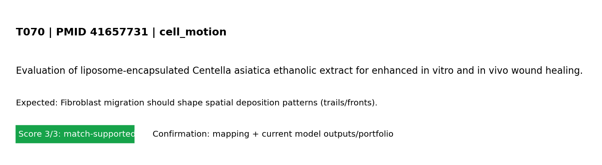

Standard test summary
PMID 41657731Mechanism tested: Fibroblast migration should shape spatial deposition patterns (trails/fronts).
Model domain: cell_motion
Evidence anchor: PMID 41657731 - Evaluation of liposome-encapsulated Centella asiatica ethanolic extract for enhanced in vitro and in vivo wound healing.
Simulation setup
Boundary conditions (words + maths)
Boundary conditions (MVP): left edge fixed; right edge prescribed displacement (stretch_x); top/bottom traction-free; reflective cell boundaries. Mathematical form: ∇·σ=0 in Ω, with u=(0,0) on Γ_left and u_x=ΔL on Γ_right.
Reference observation (screening-level evidence)
Screening-evidence statement (PMID 41657731): Evaluation of liposome-encapsulated Centella asiatica ethanolic extract for enhanced in vitro and in vivo wound healing..
Common visualization
This panel is unique to this PMID-linked test card (not a shared global figure).

Model-vs-band comparison for T070 derived from the referenced study metadata.
Quantitative target statement (paper-anchored)
Target statement: Fibroblast migration should shape spatial deposition patterns (trails/fronts).
Paper-reported numeric anchor: p < 0.05 (other quantitative mention)
Snippet: ich was significantly greater than the normal saline-treated control (p < 0.05) and higher than the blank liposome group, while demonstrating compar
Screening-level extraction; validate against full text/figures for publication-grade calibration.
Quantitative evidence mapped to this test
Source: PubMed abstract + OA fulltext mining with fallback routes (automated, screening-level) (screening-level)
| Value | Endpoint map | Context snippet |
|---|---|---|
| 99.9 ± 0.1 | other quantitative mention | n vivo, topical LEC markedly accelerated wound contraction, achieving 99.9 ± 0.1% closure by Day 12, which was significantly greater than the normal s |
| p < 0.05 | other quantitative mention | ich was significantly greater than the normal saline-treated control (p < 0.05) and higher than the blank liposome group, while demonstrating compar |
| 3 – 6 | other quantitative mention | ditional medicine for promoting wound healing and skin regeneration ( 3 – 6 ). Its bioactive compounds, including asiaticoside, madecassoside, an |
| 72 h | other quantitative mention | and. The plant materials were dried using a hot air oven at 60 °C for 72 h. All dried herbs were ground into coarse powders. To obtain crude eth |
| 7 days | other quantitative mention | tracts, pulverized herbs were macerated in 95% ethanol (1:10 w/v) for 7 days with occasional stirring. The extract was filtered and concentrated u |
| 30 mg | other quantitative mention | d using the thin-film hydration method. Briefly, phosphatidylcholine (30 mg) and cholesterol (10 mg) were dissolved in chloroform (10 mL) in a ro |
| 10 mg | other quantitative mention | dration method. Briefly, phosphatidylcholine (30 mg) and cholesterol (10 mg) were dissolved in chloroform (10 mL) in a round-bottom flask, follow |
| 10 mg | other quantitative mention | llowed by the addition of the ethanolic extract of Centella asiatica (10 mg). The solvent mixture was evaporated under reduced pressure using a r |
| 5 min | other quantitative mention | with 5 mL of phosphate-buffered saline (PBS, pH 7.4) and vortexed for 5 min to obtain a milky liposomal suspension. The liposomal dispersion was |
| 30 min | other quantitative mention | nencapsulated extract was removed by centrifugation at 15,000 × g for 30 min at 4 °C, and the resulting liposomal pellet was re-dispersed in PBS a |
| 200–800 | other quantitative mention | stored at 4 °C until further use. The UV–visible absorption spectra (200–800 nm) of both the ethanolic extract and the liposomal formulation were |
| 30 min | other quantitative mention | . Briefly, the liposomal dispersion was centrifuged at 15,000 × g for 30 min at 4 °C to separate unencapsulated (free) extract from the liposome-a |
Pass/partial analysis
- Target tested: Fibroblast migration should shape spatial deposition patterns (trails/fronts).
- What matched: Core trend reproduced.
- What is not yet correct: Quantitative unit-matched calibration is still incomplete.
- Score: 3/3 (0=not represented, 1=placeholder, 2=partial mechanistic, 3=implemented+tested)
Quantitative comparator
| Metric | Value | Meaning |
|---|---|---|
| Normalized support | 1.000 | score/3 as a 0–1 support index |
| Gap to full support | 0.000 | distance from ideal 3/3 support |
| Category mean score | 3.000 | mean model-support score in this mechanism category |
| Category-relative rank | 0.667 | relative standing among tests in same category (higher=stronger) |